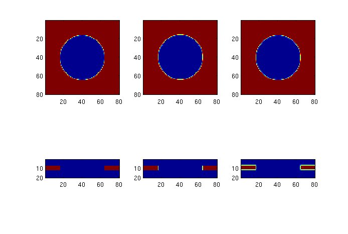

add_planar
Add a planar structure to epsilon (permittivity).
Contents
Description
Use this to add a simple planar structure (i.e. slab) consisting only of rectanges and circles to epsilon.
add_planar takes care of the mess of dealing with Yee's grid, with its non-colocated x-, y-, and z-components. A uniformly-spaced grid is assumed.
function [epsilon] = add_planar(epsilon, z_thickness, z_center, in_plane_shapes)
Input parameters
- epsilon is a 3-element cell array representing the x-, y-, and z-components of the permittivity respectively. Each cell element is therefore an array of size (xx, yy, zz).
- z_thickness and z_center describe the thickness and center-location of the slab in grid units.
- in_plane_shapes is a vector of shape structures which are drawn in order. A shape structure can be created in the following way:
% For a rectangle that covers the entire grid.
my_rectangle = struct('type', 'rectangle', ...
'position', [0 0], ...
'size', [1e9 1e9], ...
'permittivity', 12.25); % For a circle.
my_circle = struct('type', 'circle', ...
'position', [0 0], ...
'radius', 24, ...
'permittivity', 1); % Put both shapes together.
my_shapes = {my_rectangle, my_circle};Output parameters
- epsilon is the permittivity with the slab structure added.
Example
The following code snippet, using my_shapes from above, creates a simple slab with a large hole in the middle.
epsilon = {ones(80,80,20), ones(80,80,20), ones(80,80,20)};
epsilon = add_planar(epsilon, 5, 10, my_shapes); % my_shapes from code above. % Visualize the structure.
for k = 1 : 3
subplot(2, 3, k);
imagesc(epsilon{k}(:,:,10)'); axis equal tight;
subplot(2, 3, k+3);
imagesc(squeeze(epsilon{k}(:,40,:))'); axis equal tight;
endThis example code produces the following figure.

Source code
% Get the dimensions of the grid. % Also get doubled dimensions so we can upsample in 2D in order to take care % of the Yee grid offsets. dims = size(epsilon{1}); dd = 2 * dims(1:2); % Doubled dimensions in 2D. epsilon_2D = zeros(dd); % We draw on this 2D grid. % Position data. x = (1:dd(1)) ./ 2; y = (1:dd(2)) ./ 2; [x, y] = ndgrid (x, y); % Find the center, shape positions are all relative to this point. center = [mean(mean(x)) mean(mean(y))]; % Naive center. center = floor(2 * round(center)/2) + [0.5 0]; % Slight offset for symmetry. % Controls the amount of "smear" applied to structures. edge_len = 1; % Hard-coded to 1 grid unit.
We are now set up to draw the in-plane shapes.
% Draw the in-plane shapes (in order) for k = 1 : length(in_plane_shapes) s = in_plane_shapes{k}; switch s.type case 'circle' epsilon_2D = my_draw_circle(center + s.position, ... s.radius, ... s.permittivity, ... epsilon_2D, x, y, edge_len); case 'rectangle' epsilon_2D = my_draw_rectangle(center + s.position, ... s.size, ... s.permittivity, ... epsilon_2D, x, y, edge_len); otherwise error('Invalid shape type.') end end
Now we downsample in order to obtain the values on the Yee grid.
% Initial grid points (on the doubled grid) for the three vector components % of epsilon. % This is how the Yee grid offsets are taken into account. xi = [2 1 1]; yi = [1 2 1]; % Downsample to get the values of epsilon on the (2D) Yee grid. for k = 1 : 3 epsilon_slab{k} = epsilon_2D(xi(k):2:dd(1), yi(k):2:dd(2)); end
Finally, we use the 2D pattern to insert a 3D slab into epsilon.
zi = [0 0 0.5]; % Offsets in the z-direction. for k = 1 : 3 z = zi(k) + [1 : dims(3)]; % Make the weighting function. w = (z_thickness/2 - abs(z - z_center)) / edge_len; w = 1 * (w > 0.5) + (w+0.5) .* ((w>-0.5) & (w <= 0.5)); % Apply the weighting function. for l = 1 : dims(3) if w(l) ~= 0 epsilon{k}(:,:,l) = (1-w(l)) * epsilon{k}(:,:,l) + ... w(l) * epsilon_slab{k}; end end end
Source code for private functions
Here are the private functions used for drawing circles and rectangles.
function [epsilon] = my_draw_circle (center, radius, eps_circ, epsilon, x, y, edge_length) % Draw a circle. r = sqrt ((x-center(1)).^2 + (y - center(2)).^2); weight = (radius - r)./edge_length + 1/2; weight = weight .* (weight > 0); % bottom caps at 0 weight = (weight-1) .* (weight < 1) + 1; % top caps at 1 w = weight; epsilon = epsilon .* (1-w) + eps_circ .* w; function [epsilon] = my_draw_rectangle (center, width, eps_rect, epsilon, x, y, edge_length) % Draw a rectangle. xy = {x, y}; for cnt = 1 : 2 weight{cnt} = (width(cnt)/2 - abs (xy{cnt}-center(cnt)))./edge_length + 1/2; weight{cnt} = weight{cnt} .* (weight{cnt} > 0); % bottom caps at 0 weight{cnt} = (weight{cnt}-1) .* (weight{cnt} < 1) + 1; % top caps at 1 end w = weight{1}.*weight{2}; epsilon = epsilon .* (1-w) + eps_rect .* w;